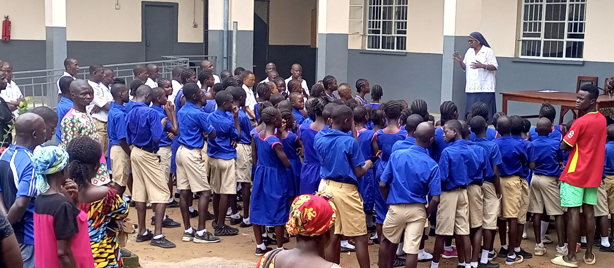

SINCE 1979 • MAKENI, SIERRA LEONE
Education will help us take our rightful place in society.
Care and special education for deaf children from all over Sierra Leone — for 45+ years.
270
Pupils 4–18
110
Boarders
58
Staff
1st
Audiology lab in SL


Led by Sr. Amala Santiago
Teachers, carers & technicians